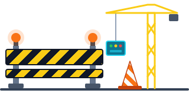

Due modi per dare una mano a MiaPLC
MiaPLC è un progetto open source ideato e sviluppato da Denys, nel tempo libero e senza compenso. Scegli tu: aiuti il progetto, oppure aiuti chi lo scrive a restare sveglio.

Sto preparando il conto dedicato al progetto e il modo per donare online. I pulsanti qui sotto si accendono appena è tutto pronto. Nel frattempo, se vuoi dare una mano, scrivimi a info@miaplc.it.
Sostieni il progetto
La donazione va a MiaPLC: chip, schede, prototipi, strumenti di test. E, quando si potranno far fabbricare, schede da dare alle scuole, il motivo per cui il progetto è nato.
♥ Dona al progetto 🚧 prestoOffrimi un caffè
Un network ladder gira in 0,79 µs. Io, dopo mezzanotte, molto meno. Un caffè mi tiene in RUN invece che in STOP, e il watchdog resta tranquillo.
☕ Offri un caffè 🚧 presto- Tempo volontario. Il lavoro su MiaPLC non è retribuito, e il software resta libero (GPL-3.0).
- Donazioni al progetto, solo per il progetto. Servono a farlo crescere e a portarlo nelle scuole. Nessuna ricompensa in cambio.
- Tutto tracciato. Ogni spesa ha il suo scontrino e una volta all'anno pubblico il riepilogo entrate e spese.
- Il caffè è a parte. È un regalo personale a me e non si mescola con i soldi del progetto.
- 1 · ArrivaLa donazione entra in un conto usato solo per MiaPLC, separato dai miei soldi.
- 2 · Si spendeSolo per il progetto: hardware, strumenti, prove, schede per le scuole.
- 3 · Si registraOgni spesa ha scontrino o fattura e una riga nel registro: data, cosa, costo, a cosa serve.
- 4 · Si pubblicaUna volta all'anno il riepilogo di entrate e spese esce qui, su questa pagina.
Primo riepilogo: fine 2026. Se avanza qualcosa, resta al progetto per l'anno dopo.
📋 Mostra tutti i dettagli
Cosa pagano le donazioni al progetto
- 🧩 chip, schede di sviluppo e componenti
- 🖨️ PCB, prototipi e assemblaggio
- 📦 moduli µLink per le prove con 50, 100, 500 schede
- 🚚 spedizioni, dazi e IVA sui materiali
- 📟 strumenti di test: oscilloscopio, analizzatore logico, alimentatore
- 🧰 strumenti di supporto: software, documentazione, norme tecniche
- 🌐 dominio, sito, email e server quando serviranno
- 🛡️ prove EMC, cybersecurity e certificazioni
- ™️ registrazione del marchio MiaPLC
- 💳 commissioni delle piattaforme di donazione
- 🏫 schede da fornire alle scuole, appena si potranno produrre
Cosa non pagano
Il mio tempo, che resta volontario, e nessuna spesa personale. Per quelle c'è il caffè.
Gli strumenti
Gli strumenti comprati con le donazioni sono il banco di prova di MiaPLC e restano al servizio del progetto.
Trasparenza
Tengo un registro con data, cosa, costo e a cosa serve. Una volta all'anno pubblico qui il riepilogo di entrate e spese. Per qualsiasi domanda scrivi a info@miaplc.it.
Aiutare senza soldi
Prova il simulatore, segnala errori, proponi esempi, presta hardware o fai conoscere MiaPLC a una scuola.
Presto, dalla diagnostica avanzata dell'editor, potrai inviarci le statistiche della tua scheda: configurazione hardware, tempi ciclo, uso di RAM e stack, memoria occupata, moduli attivi, tempi per FC. Ci aiutano a capire come lavora MiaPLC sugli impianti veri e dove migliorarlo.
Prima dell'invio vedi i dati e confermi tu. Non si inviano programmi, nomi di variabili o dati personali, e la scheda non si collega mai a internet: l'invio parte dall'editor, solo quando lo decidi tu.
⚠ La raccolta delle statistiche si attiva in MiaConfig ed è pensata per le prove al banco: rallenta il PLC e può causare blocchi con riavvio della scheda. Non va usata su macchine o impianti in funzione.